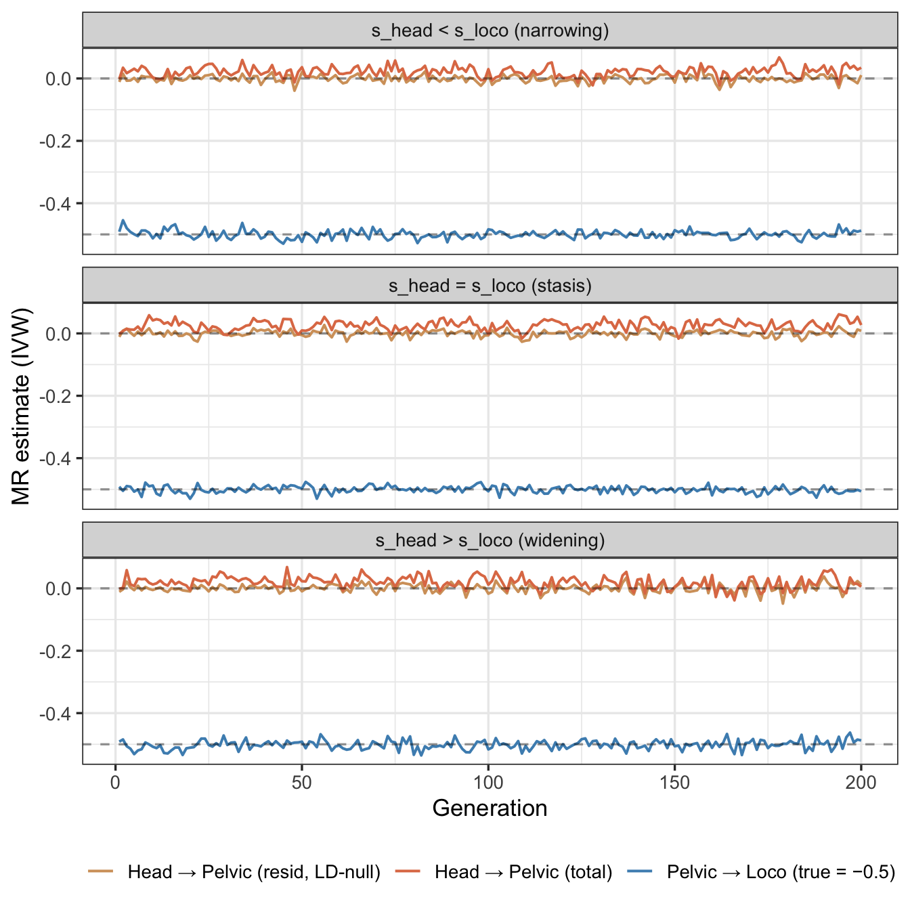
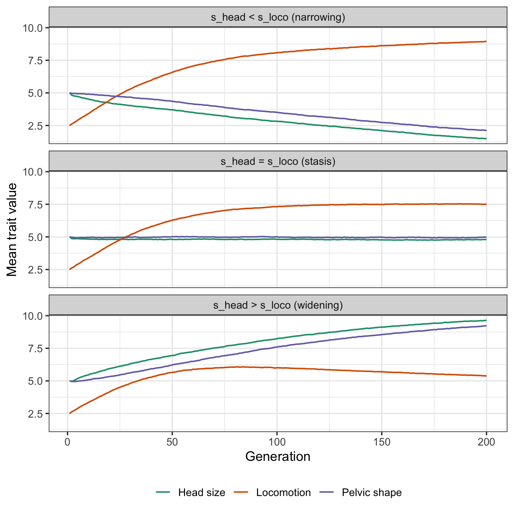

library(tidyverse)Background
Hypothesis that there is selective pressure to increase head size, but that influences birth complications, which introduces selective pressure to change pelvic shape to be wider. However, locomotion is also under positive selection, and depends on narrower pelvic shape.
Question - how does MR look cross sectionally when such a co-evolutionary process is happening?
Causal setup
Three traits: head size, pelvic shape, locomotion.
- Head size → pelvic shape: No within-individual causal path. Co-evolution arises purely through parent-offspring transmission: a child’s fitness depends on their mother’s pelvic width relative to their own head size, and since mother and child share 50% of alleles, head-size alleles and pelvic-width alleles become correlated across generations under selection.
- Pelvic shape → locomotion: True within-individual causal effect (β = -0.5). Wide pelvises mechanically impair gait.
This creates a natural contrast: MR should recover the pelvic→loco effect correctly, but find a spurious head→pelvic signal that grows as evolutionary co-selection builds up genetic correlation between otherwise independent loci.
Fitness function
Fitness has three components - Locomotion: directional selection for better locomotion - Head size: directional selection for larger heads - Birth penalty: linear penalty when head size exceeds mother’s pelvic width
Use a multiplicative, exponential scaling. For offspring \(i\) born to mother \(m\):
\[ w_i = \exp\!\left(s_\text{head}\, H_i + s_\text{loco}\, L_i - s_\text{birth}\max(0,\, H_i - P_m)\right) \]
where \(H_i\) is head size, \(L_i\) is locomotion, and \(P_m\) is the mother’s pelvic width.
| Parameter | Value | Role |
|---|---|---|
| \(s_\text{head} = 0.3\) | Directional selection for larger heads | |
| \(s_\text{loco} = 0.1\) | Directional selection for locomotion | |
| \(s_\text{birth} = 0.5\) | Linear birth penalty when \(H_i > P_m\) |
The one-sided penalty \(\max(0, H_i - P_m)\) captures the asymmetry of the obstetric constraint: when the pelvis is wider than the head (\(H_i \leq P_m\)) birth is unimpeded and there is no fitness cost; when the head exceeds the pelvis (\(H_i > P_m\)) fitness falls linearly with the excess. This creates the epistatic interaction needed to generate genetic correlation — the selection gradient on head size is \(s_\text{head}\) when \(H_i \leq P_m\) and \(s_\text{head} - s_\text{birth}\) when \(H_i > P_m\), so the marginal cost of a larger head depends on the mother’s pelvic width.
Simulation parameters
- N = 10,000 individuals per generation
- 200 generations, discrete with fitness-weighted reproduction
- 25 SNPs per trait, equal effects, h² = 0.5 per trait
- Sex-neutral (simplified; pelvic-shape alleles expressed equally in all individuals)
MR analysis
IVW using all 25 trait-specific SNPs as instruments, run at each generation:
- Head → pelvic (true causal effect = 0): head SNPs as instruments
- Pelvic → loco (true causal effect = -0.5): pelvic SNPs as instruments
transmit <- function(geno) {
matrix(rbinom(length(geno), 1L, geno / 2), nrow(geno), ncol(geno))
}
gwas <- function(geno, trait) {
n <- nrow(geno)
gc <- scale(geno, center = TRUE, scale = FALSE)
gvar <- colSums(gc^2)
betas <- as.vector(crossprod(gc, trait) / gvar)
fitted <- sweep(gc, 2, betas, `*`)
resvar <- colSums((trait - fitted)^2) / (n - 2L)
se <- sqrt(resvar / gvar)
list(beta = betas, se = se)
}
mr_ivw <- function(bx, by, se_by) {
w <- 1 / se_by^2
sum(w * by * bx) / sum(w * bx^2)
}
# --- Main simulation function ---
run_sim <- function(
s_head = 0.3,
s_birth = 0.5,
s_loco = 0.2,
beta_pl = -0.5,
N = 10000,
n_gen = 200,
n_snp = 25,
h2 = 0.5,
seed = 42
) {
set.seed(seed)
beta_snp <- sqrt(h2 / (n_snp * 0.5))
noise_sd <- sqrt(1 - h2)
snp_eff <- rep(beta_snp, n_snp)
compute_traits <- function(gh, gp, gl) {
n <- nrow(gh)
head <- drop(gh %*% snp_eff) + rnorm(n, 0, noise_sd)
pelvic <- drop(gp %*% snp_eff) + rnorm(n, 0, noise_sd)
loco <- beta_pl * pelvic + drop(gl %*% snp_eff) + rnorm(n, 0, noise_sd)
list(head = head, pelvic = pelvic, loco = loco)
}
gh <- matrix(rbinom(N * n_snp, 2L, 0.5), N, n_snp)
gp <- matrix(rbinom(N * n_snp, 2L, 0.5), N, n_snp)
gl <- matrix(rbinom(N * n_snp, 2L, 0.5), N, n_snp)
mother_pelvic <- rnorm(N)
out <- vector("list", n_gen)
for (t in seq_len(n_gen)) {
tr <- compute_traits(gh, gp, gl)
lf <- s_head * tr$head + s_loco * tr$loco -
s_birth * pmax(0, tr$head - mother_pelvic)
fitness <- exp(lf - max(lf))
fitness <- fitness / sum(fitness)
# Genetic component of pelvic (from pelvic SNPs only)
pelvic_genetic <- drop(gp %*% snp_eff)
pelvic_resid <- tr$pelvic - pelvic_genetic
gw_h <- gwas(gh, tr$head)
gw_ph <- gwas(gh, tr$pelvic) # head SNPs → total pelvic
gw_ph_r <- gwas(gh, pelvic_resid) # head SNPs → pelvic residual (LD-null)
gw_p <- gwas(gp, tr$pelvic)
gw_lp <- gwas(gp, tr$loco)
out[[t]] <- data.frame(
gen = t,
mr_head_pelvic = mr_ivw(gw_h$beta, gw_ph$beta, gw_ph$se),
mr_head_pelvic_resid = mr_ivw(gw_h$beta, gw_ph_r$beta, gw_ph_r$se),
mr_pelvic_loco = mr_ivw(gw_p$beta, gw_lp$beta, gw_lp$se),
cor_head_pelvic = cor(tr$head, tr$pelvic),
mean_head = mean(tr$head),
mean_pelvic = mean(tr$pelvic),
mean_loco = mean(tr$loco)
)
mid <- sample.int(N, N, replace = TRUE, prob = fitness)
fid <- sample.int(N, N, replace = TRUE, prob = fitness)
gh <- transmit(gh[mid, ]) + transmit(gh[fid, ])
gp <- transmit(gp[mid, ]) + transmit(gp[fid, ])
gl <- transmit(gl[mid, ]) + transmit(gl[fid, ])
mother_pelvic <- tr$pelvic[mid]
}
bind_rows(out)
}
# --- Run across selection coefficient grid ---
# Vary s_head relative to s_loco to show stasis vs widening
params <- tribble(
~s_head, ~s_loco, ~label,
0.1, 0.2, "s_head < s_loco (narrowing)",
0.2, 0.2, "s_head = s_loco (stasis)",
0.4, 0.2, "s_head > s_loco (widening)"
)
results <- params |>
rowwise() |>
mutate(sim = list(run_sim(s_head = s_head, s_loco = s_loco))) |>
unnest(sim)results |>
select(gen, label, mr_head_pelvic, mr_head_pelvic_resid, mr_pelvic_loco) |>
pivot_longer(c(mr_head_pelvic, mr_head_pelvic_resid, mr_pelvic_loco),
names_to = "analysis", values_to = "estimate") |>
mutate(analysis = recode(analysis,
mr_head_pelvic = "Head → Pelvic (total)",
mr_head_pelvic_resid = "Head → Pelvic (resid, LD-null)",
mr_pelvic_loco = "Pelvic → Loco (true = −0.5)"
)) |>
ggplot(aes(gen, estimate, colour = analysis)) +
geom_line(linewidth = 0.7) +
geom_hline(yintercept = c(0, -0.5), linetype = "dashed", alpha = 0.4) +
facet_wrap(~label, ncol = 1) +
scale_colour_manual(values = c(
"Head → Pelvic (total)" = "#e07b54",
"Head → Pelvic (resid, LD-null)" = "#d4a06a",
"Pelvic → Loco (true = −0.5)" = "#4c8fbd"
)) +
labs(x = "Generation", y = "MR estimate (IVW)", colour = NULL) +
theme_bw(base_size = 13) +
theme(legend.position = "bottom")
results |>
select(gen, label, mean_head, mean_pelvic, mean_loco) |>
pivot_longer(c(mean_head, mean_pelvic, mean_loco),
names_to = "trait", values_to = "mean") |>
mutate(trait = recode(trait,
mean_head = "Head size",
mean_pelvic = "Pelvic shape",
mean_loco = "Locomotion"
)) |>
ggplot(aes(gen, mean, colour = trait)) +
geom_line(linewidth = 0.7) +
facet_wrap(~label, ncol = 1) +
scale_colour_brewer(palette = "Dark2") +
labs(x = "Generation", y = "Mean trait value", colour = NULL) +
theme_bw(base_size = 13) +
theme(legend.position = "bottom")
Interpretation
- If larger head size requires wider pelvic shape, and better locomotion requires narrower pelvic shape, evolution is constrained
- When selection coefficients are equal for head size and locomotion, pelvic shape and head size remains stable (stasis). Locomotion has an independent genetic component that is not constrained so it can evolve until variance is exhausted, at which point it is also constrained.
- When selection for head size is stronger, pelvic shape and head size both increase (widening). Locomotion evolves until its independent genetic variance is exhausted, at which point it starts to decline in response to greater fitness gain from larger head size
- MR of head size on pelvic shape appears to be weakly positive.
- It appears that this is entirely due to LD between head size and pelvic shape SNPs, as MR of head size on pelvic shape residuals (after regressing out pelvic shape SNPs) is null.
- As all the variants are independent, the LD generated is weak and reset every generation, so the MR signal is weak. If there were pleiotropic variants that affected both head size and pelvic shape, or variants for both traits in close proximity, the MR signal would be stronger.
sessionInfo()R version 4.6.0 (2026-04-24)
Platform: aarch64-apple-darwin23
Running under: macOS Sequoia 15.2
Matrix products: default
BLAS: /Library/Frameworks/R.framework/Versions/4.6/Resources/lib/libRblas.0.dylib
LAPACK: /Library/Frameworks/R.framework/Versions/4.6/Resources/lib/libRlapack.dylib; LAPACK version 3.12.1
locale:
[1] en_US.UTF-8/en_US.UTF-8/en_US.UTF-8/C/en_US.UTF-8/en_US.UTF-8
time zone: Europe/London
tzcode source: internal
attached base packages:
[1] stats graphics grDevices utils datasets methods base
other attached packages:
[1] lubridate_1.9.5 forcats_1.0.1 stringr_1.6.0 dplyr_1.2.1
[5] purrr_1.2.2 readr_2.2.0 tidyr_1.3.2 tibble_3.3.1
[9] ggplot2_4.0.3 tidyverse_2.0.0
loaded via a namespace (and not attached):
[1] gtable_0.3.6 jsonlite_2.0.0 compiler_4.6.0 tidyselect_1.2.1
[5] scales_1.4.0 yaml_2.3.12 fastmap_1.2.0 R6_2.6.1
[9] labeling_0.4.3 generics_0.1.4 knitr_1.51 htmlwidgets_1.6.4
[13] pillar_1.11.1 RColorBrewer_1.1-3 tzdb_0.5.0 rlang_1.2.0
[17] stringi_1.8.7 xfun_0.57 S7_0.2.2 otel_0.2.0
[21] timechange_0.4.0 cli_3.6.6 withr_3.0.2 magrittr_2.0.5
[25] digest_0.6.39 grid_4.6.0 hms_1.1.4 lifecycle_1.0.5
[29] vctrs_0.7.3 evaluate_1.0.5 glue_1.8.1 farver_2.1.2
[33] codetools_0.2-20 rmarkdown_2.31 tools_4.6.0 pkgconfig_2.0.3
[37] htmltools_0.5.9